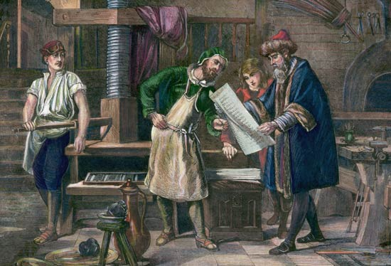

Gravure Printing
Applications: Typical gravure printed products include: Food packaging Wall paper Wrapping paper Furniture laminates Paneling Greeting cards Magazines
The gravure process has its origins in the early seventeenth century when the intaglio printing process was developed to replace woodcuts in illustrating the best books of the time. In early intaglio printing, illustrations were etched on metal, inked, and pressed on paper. Gravure, still also known as intaglio printing, makes use of the ability of ink to adhere to a slight scratch or depression on a polished metal plate.
Currently, the dominant gravure printing process, referred to as rotogravure, employs web presses equipped with a cylindrical plates (image carrier). A number of other types of gravure presses are currently in use. Rotary sheet-fed gravure presses are used when high quality pictorial impressions are required. They find limited use, primarily in Europe. Intaglio plate printing presses are used in certain specialty applications such as printing currency and in fine arts printing. Offset gravure presses are used for printing substrates with irregular surfaces or on films and plastics.
Today almost all gravure printing is done using engraved copper cylinders protected from wear by the application of a thin electroplate of chromium. The cylinders (image carrier) used in rotogravure printing can be from three inches in diameter by two inch wide to three feet in diameter by 20 feet wide. Publication presses are from six to eight feet wide while presses used for printing packaging rarely exceed five feet. in width. Product gravure presses show great variation in size, ranging from presses with cylinders two inches wide, designed to print wood grain edge trim, to cylinders 20 feet wide, designed to print paper towels. The basics of Gravure printing is a fairly simple process which consists of a printing cylinder, a rubber covered impression roll, an ink fountain, a doctor blade, and a means of drying the ink
Gravure printing is characteristically used for long run, high quality printing producing a sharp, fine image. The number of gravure printing plants in the U.S. is significantly lower than other printing processes. This is due, in part, to the cost of presses and components. While a lithographic press will cost in the range of $100,000 the cost of gravure press will be in the range of $1 million. Additionally a single gravure cylinder will cost around $5000 versus around $15 for a lithographic plate. Additionally, the gravure cylinder has a long service life and will yield a very large number of impressions without degradation.
Gravure printing is an example of intaglio printing. It uses a depressed or sunken surface for the image. The image areas consist of honey comb shaped cells or wells that are etched or engraved into a copper cylinder. The unetched areas of the cylinder represent the non-image or unprinted areas. The cylinder rotates in a bath of ink called the ink pan. As the cylinder turns, the excess ink is wiped off the cylinder by a flexible steel doctor blade. The ink remaining in the recessed cells forms the image by direct transfer to the substrate (paper or other material) as it passes between the plate cylinder and the impression cylinder.
The major unit operations in a gravure printing operation are:
Image preparation Cylinder preparation Printing Finishing
Gravure Inks - Solvent Based, Water Based
Gravure inks are fluid inks with a very low viscosity that allows them to be drawn into the engraved cells in the cylinder then transferred onto the substrate. In order to dry the ink and drive off the solvents or water, which essentially replaces most of the solvent, the paper is run through Gas fired or electric fired driers. The ink will dry before the paper reaches the next printing station on the press. This is necessary because wet inks cannot be overprinted without smearing and smudging. Therefore, high volume air dryers are placed after each printing station. The solvent-laden air from the dryers is passed through either a solvent recovery system or solvent vapor incinerator. A typical recovery system uses beds of activated carbon to absorb the solvent. Saturated beds are regenerated by steam. The solvent laden steam is then condensed and the water and solvent separate by gravity. Greater than 95 percent of the ink solvents can be recovered using this process (Buonicore). The solvents can either be reused or destroyed by incineration. Water based inks, especially used for packaging and product gravure, require a higher temperature and longer drier exposure time in order to drive off the water and lower vapor pressure constituents. As mentioned subsequent sections, Flexo and Gravure inks are very similar and the constituents are essentially the same. Again, a pollution control device may be needed.
Gravure Press Design and Equipment
Web-fed gravure presses account for almost all publication, packaging, and product gravure printing. These presses are generally custom manufactured machines designed for a specific range of products. The typical press is highly automated and consists of multiple print units. The printing mechanism in a rotogravure press consists of a gravure cylinder and a smaller, rubber clad impression cylinder. Other types of gravure presses in commercial use today are sheet-fed, intaglio plate, and offset gravure. These types of presses are used primarily for special printing applications.
WEB FED GRAVURE
PUBLICATION GRAVURE Publication gravure is used primarily for very long press runs required to print mass-circulation periodicals, directories, inserts, and catalogs. Publication gravure maintains a competitive edge in the printing of mass-circulation magazines because the process offers high speed, high quality four color illustrations on less expensive paper, variable cut-off lengths, and flexible folding equipment. These presses can have as many as ten printing stations - four for color and one for monochrome text and illustration in each direction so that both sides of the web can be printed in one non-stop operation. They can handle web widths of up to 125 inches and are equipped to print most large format publications in circulation today. Publication gravure presses can also be fitted with cylinders of differing diameters to accommodate varying page sizes. The major types of chemicals used in publication gravure include adhesives, metal plating solutions, inks, and cleaning solvents. In terms of chemicals, publication gravure differs from packaging and product gravure primarily in its heavy reliance on toluene-based ink (GATF 1992b). The publication gravure industry has had little success with water-based inks (Buonicore). The industry has found that in publication gravure where the substrate is always paper stock, water-based inks have not been capable of printing commercially acceptable quality productions runs of 2,000 to 3,000 feet per minute. PACKAGING GRAVURE Packaging rotogravure presses are used for printing folding cartons as well as a variety of other flexible packaging materials. In addition to printing, packaging gravure presses are equipped to fold, cut, and crease paper boxes in a continuous process. Packages are usually printed on only one side, so the number of print stations is usually about half that required for publication gravure presses. However, in addition to printing stations for the four basic colors, packaging gravure presses may employ printing stations for the application of metallic inks and varnishes as well as laminating stations designed to apply foils to the paper substrate prior to printing. Packaging gravure presses are designed with the accurate cutting and creasing needs of the packaging material in mind. However, image quality is generally less important in packaging printing than in most other types of printing and, subsequently, receives less emphasis. The chemicals used in packaging gravure are similar to those used in publication gravure. However, the inks used in packaging gravure are largely alcohol- and not toluene-based (GATF 1992b). Water-based inks are being successfully used for lower quality, non-process printing on paper and paperboard packaging and for printing on non-absorbent packaging substrates such as plastics, aluminum, and laminates (Tyszka 1993). Use of water-based inks is expected to increase; however, problems still limit their use at press speeds above 1,000 feet per minute (Buonicore). PRODUCT GRAVURE The continuous printing surface found on gravure press cylinders provides the "repeat" required to print the continuous patterns found on textiles and a variety of other products. In the textile industry, a gravure heat transfer process using subliming dyes is used to print images on paper. These images are then transferred from the paper to a fabric (usually polyester) through a combination of heat and pressure. The gravure process is also used to print continuous patterns on wallboard, wallpaper, floor coverings, and plastics. The chemicals used in product gravure are similar to those used in both publication and packaging gravure. However, product gravure uses both water- and solvent-based inks (GATF 1992b). The industry has used water-based inks successfully on medium-weight papers and on nonabsorbent substrates such as plastics, aluminum, and laminates (Tyszka 1993). However, problems such as paper distortion and curl persist with lightweight papers (Buonicore).
Image Preparation
Image preparation begins with camera-ready (mechanical) art/copy or electronically produced art supplied by the customer. Images are captured for printing by camera, scanner, or computer. Components of the image are manually assembled and positioned in a printing flat when a camera is used. This process is called stripping. When art/copy is scanned or digitally captured, the image is assembled by the computer with special software. A proof is prepared to check for position and accuracy. When color is involved, a color proof is submitted to the customer for approval.
Cylinder Preparation
The gravure cylinder is composed of a steel or aluminum base, is copper plated and then polished to a predetermined diameter. Precise diameter of gravure cylinders in a set is critical. Any variances in diameter, as little as 2 thousandths of an inch can significantly affect the print registration. These cylinders are extremely sensitive to scratches and abrasions. Extreme care is taken when handling and storing the cylinders.
Because copper is so soft the image areas quickly wear. Cylinders that are used for press runs of a million impressions or more are chromium plated. Some gravure printers "Double Chrome" cylinders in order to run them even longer. When the chromium begins to wear or the image is no lit is stripped off and the cylinder is re-chromed. This is much cheaper (and environmentally responsible) than etching a new cylinder. Once the cylinder has degraded or the image is no longer needed the image can be stripped off and the base cylinder can be reused for other printing jobs unlike other printing processes.
Gravure Cylinder Imaging:
Chemical Etching
Electromechanically Engraved
Direct Digital Engraving.
There are three processes used for making gravure cylinders. The first is for conventional gravure using chemical etching that produces cells of the same size or area with varying depths. The second is Electromechanically engraved cylinders.
In electromechanically engraved cylinder making, the image or copy is wrapped around a scanning cylinder. The scanning head moves across the scanning cylinder which sends impulses to a computer. The computer signals a pneumatic head, which contains a diamond stylus, when and where to make a cell in the copper cylinder. The diamond stylus cuts an inverted pyramid shaped cell into the copper cylinder. Engraved cells may be up to 200 microns wide and up to 50 microns deep.
Chemical etching is hardly used now, but the process involves applying iron chloride solution of varying strengths over carbon tissue that has been sensitized to light by submerging it in a bath of potassium bichromate and water. The carbon tissue is a water-sensitive, fibrous paper that has been coated with a smooth gelatin resist.
In summary the gelatin resist is made to adhere to the cylinder. The cylinder is then exposed to UV light to harden the gelatin resist and then rinsed with plain water. Finally the etching technician applies the ferric chloride etchant which creates the printing cells on the cylinder.
Electromechanically engraved cells hold a lot less ink, yet print quality is equal to or better than chemically etched cylinders. In fact, an Electromechanically engraved cell holds approximately 30% less ink than a chemically engraved cell.
Recently direct digital engraving has become widespread. With this process the image can be created and manipulated using an image handling computer. Therefore, the steps of creating, copying, and rescanning film, and the loss of quality inherent in these steps, can be avoided (GAA 1991).
WEB GRAVURE PRINTING
The Doctor Blade and Impression Cylinder The doctor blade is a simple device used to shear the ink from the surface of the plate cylinder. Pressure is applied to the doctor blade to assure uniform contact along the length of the cylinder. The blades must be angled to cut the surface of the ink, but pressure and angle must be carefully adjusted to prevent premature wear on the cylinder. The doctor blade also oscillates back and forth to prevent a flat surface being worn into the cylinder. The rubber coated impression roll brings the substrate in contact with the engraved cylinder resulting in proper ink transfer. The impression roll also acts to adjust the tension between print units and helps move the substrate through the press. The impression roll is made of a tubular sleeve coated with a rubber compound. The cover material is determined by the press conditions. Typically the coating is made of natural rubber, neoprene, nitrile or polyurethane. These impression rolls are typically purchased from an outside vendor rather than made on site.
SHEET-FED GRAVURE
Applications: Sheet-fed gravure is used when very high quality impressions are required. Uses include the production of pictorial impressions for art books and posters and short runs of high quality packaging material such as cosmetics cartons. Sheet-fed gravure presses are also used for overall coating of products printed by sheet-fed offset to provide high brilliancy to the printed sheet and for the application of metallic inks that cannot be applied by the offset method. Additionally, sheet-fed gravure presses are used to produce proof copies prior to large rotogravure runs (GAA 1991). More information... Process Overview The sheet-fed gravure press differs from the web-fed press primarily in that paper is delivered to the press as pre-cut sheets instead of a continuous web. The printing mechanism in a typical sheet-fed gravure press consists of a gravure cylinder and an impression cylinder of the same size. The plate itself is a flexible metal sheet wrapped around a carrier cylinder equipped with a gripper to hold the plate in place during printing. The offset gravure press is a standard gravure unit to which a rubber-covered transfer roller has been added. The image to be printed is transferred from the gravure printing cylinder to the roller. The transfer roller then prints the image on the substrate. More Information... The transfer of the image from the cylinder to the roller is similar to the transfer method used in offset lithography. Offset gravure presses are used to print substrates with irregular surfaces such as wood veneer or decorated metal (GAA 1991). In some printing processes, both sides of the web can be printed simultaneously. However, in gravure, printing of one side of the web must be completed before the other side can be printed. In practice, the web is printed on one side, rewound, flipped over, then printed on the other side. Some rotogravure presses are designed with a turning station that rotates the web 180 degrees. The web is then run through a parallel paper path with different cylinders that prints the opposite side of the paper. These presses are called double-ended presses.